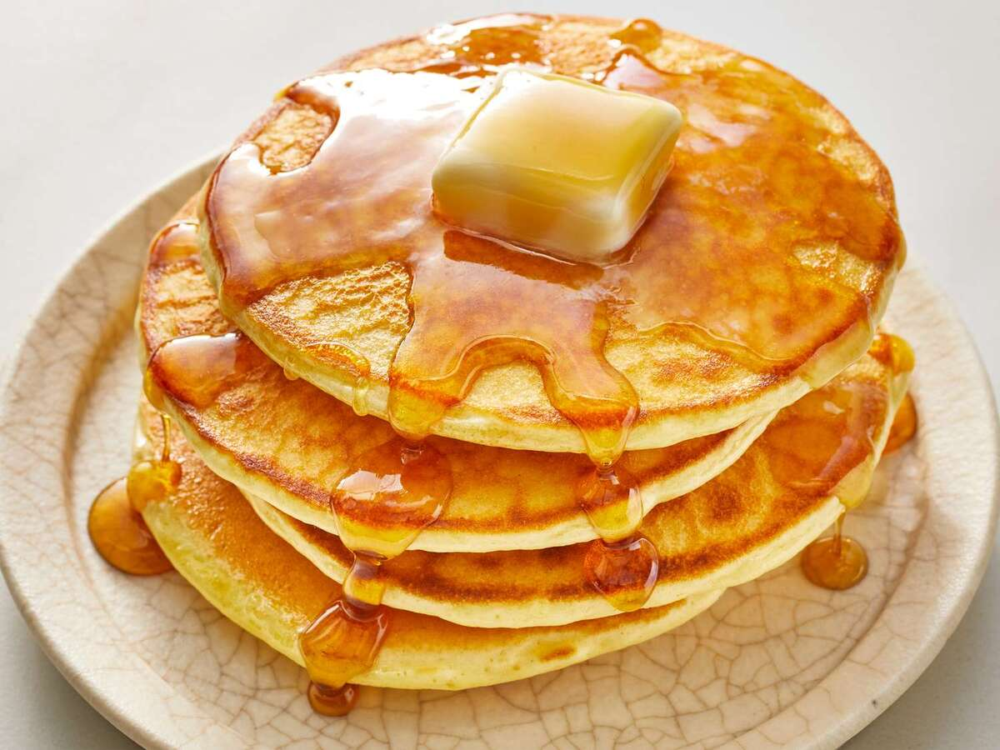

Home
Simple Pancakes

Description
A basic batter cooked on a flat pan to make soft, round pancakes, often
served for breakfast or dessert.
Ingredients
- 1 cup flour
- 1 tbsp sugar
- 1 tsp baking powder
- 1 cup milk
- 1 egg
- 1 tbsp oil or butter
Steps
- Mix flour, sugar, and baking powder in a bowl.
- Add milk, egg, and oil. Mix until smooth.
- Heat a pan over medium heat.
- Pour batter and cook until bubbles form, then flip.
- Cook until golden and serve.